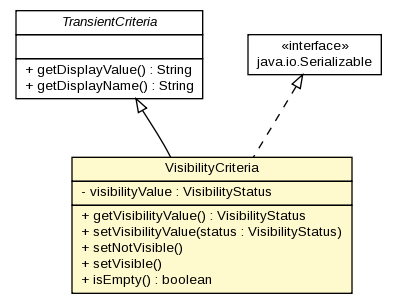

gov.nih.nci.ncia.criteria
Class VisibilityCriteria

java.lang.Object
 gov.nih.nci.ncia.criteria.Criteria
gov.nih.nci.ncia.criteria.TransientCriteria
gov.nih.nci.ncia.criteria.VisibilityCriteria
gov.nih.nci.ncia.criteria.Criteria
gov.nih.nci.ncia.criteria.TransientCriteria
gov.nih.nci.ncia.criteria.VisibilityCriteria
- All Implemented Interfaces:
- java.io.Serializable
public class VisibilityCriteria
- extends gov.nih.nci.ncia.criteria.TransientCriteria
- implements java.io.Serializable
Criteria used to specify how to filter based on
an image's visibility
- See Also:
- Serialized Form
| Methods inherited from class gov.nih.nci.ncia.criteria.TransientCriteria |
getDisplayName, getDisplayValue |
| Methods inherited from class java.lang.Object |
clone, equals, finalize, getClass, hashCode, notify, notifyAll, toString, wait, wait, wait |
visibilityValue
private VisibilityStatus visibilityValue
VisibilityCriteria
public VisibilityCriteria()
getVisibilityValue
public VisibilityStatus getVisibilityValue()
- Returns:
- the database value to filter on
setVisibilityValue
public void setVisibilityValue(VisibilityStatus status)
setNotVisible
public void setNotVisible()
- Set to see only images that are not visible
setVisible
public void setVisible()
- Set to see only images that are visible
isEmpty
public boolean isEmpty()
- Specified by:
isEmpty in class gov.nih.nci.ncia.criteria.Criteria